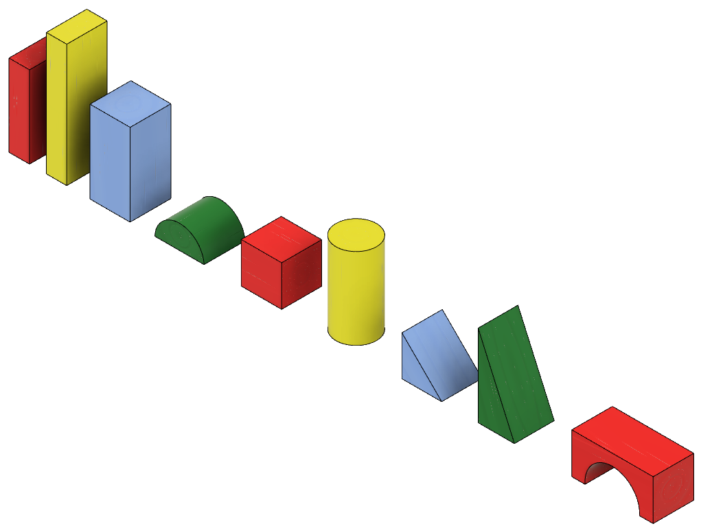
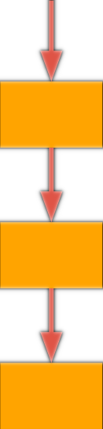
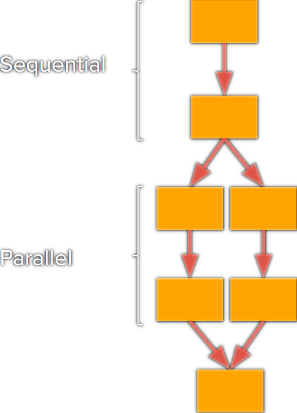
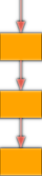
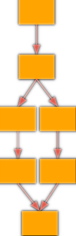
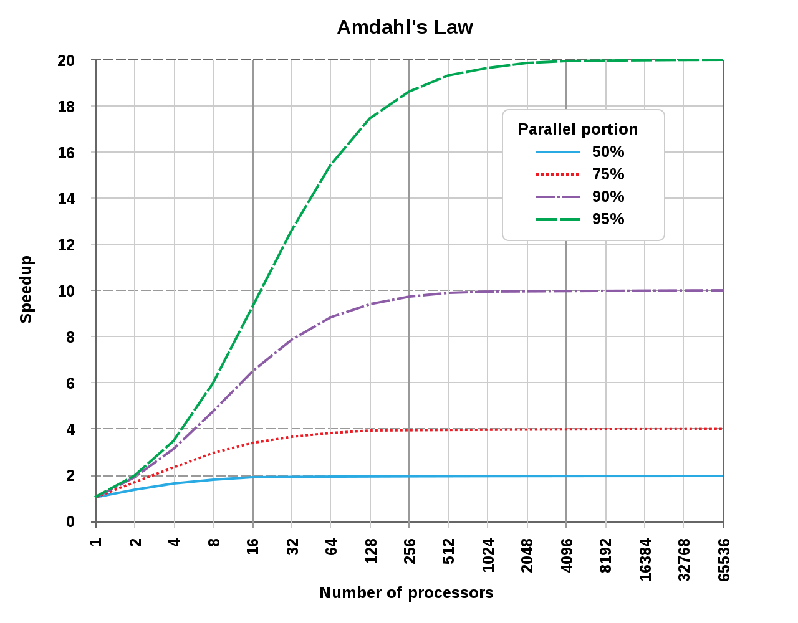

Parallel computing, speedup, and the limits of adding more processors.
What is a task that you can complete faster if you get other people to help?
What is the most number of people you would want helping you, and why?

Shake up the tub to mix the blocks.
When the timer starts, one person sorts all the blocks into piles by shape as fast as possible.
Time stops when the blocks are sorted into 9 neat piles.
Run this once for each person in your group. Keep track of each time and record the best.
Record the best time in your group.
Shake up the tub to mix the blocks.
When the timer starts, two people work together to sort the blocks into piles by shape.
Time stops when the blocks are sorted into 9 neat piles.
Run this once for each possible pair in your group. Record the best pair time.
Record the best time in your group.
Shake up the tub to mix the blocks.
When the timer starts, your entire group works together to sort the blocks into piles by shape.
Time stops when the blocks are sorted into 9 neat piles.
Run this once. Everyone participates at the same time.
Record your group's time.
Steps are performed in order, one at a time. The next step cannot begin until the current one is done.

Some steps are performed at the same time, with multiple workers acting simultaneously.

What portions of your algorithms for Challenges 2 and 3 were parallel? Describe specifically what two or more people were doing at the same time.
What made things complicated or slowed you down during the parallel portions? Were there moments when only one person could act at a time?
Speedup measures how much faster a parallel solution runs compared to a sequential one, using the same amount of work.
Example

Sequential
60 seconds

Parallel
40 seconds
The speedup of this parallel solution is 1.5.
Sequential
Your solo time
Parallel
Your team time
What was your group's speedup in Challenge 2 (two-person sort)? Divide your best solo time by your best pair time.
What was your group's speedup in Challenge 3 (full group)? Is there anything surprising about the result?

Write down answers to these questions while watching the video on the next slide.
Why is the type of computing shown in this video considered "distributed" computing?
Why is distributed computing a good fit for this particular problem? What would make solving it sequentially impractical?
The video will play when SyncDeck activates. Keep your notes ready.
Is the block-sorting activity from today a parallel algorithm, a distributed algorithm, or both? Use the definitions we discussed and evidence from the activity to explain your answer.
Could the block-sorting activity be turned into a distributed algorithm? Describe what would need to change. If you think it could not work as distributed, explain why not.
Based on today's activities, what are the pros and cons of parallel and distributed computing?
Which of the following best explains why the speedup from parallel computing is never equal to the number of processors added?